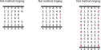

Appendix F. Framework Principles
The Framework has been designed and developed in accordance with the following principles:
1.
Scope
The scope of the Framework is method ringing (also called scientific ringing). It does not cover call (or called) changes, nor tune ringing. Cylindrical ringing, where a bell can ring twice in some Rows, and not at all in others, is similarly out of scope.
2.
Description not Prescription
Avoid arbitrary rules and value judgements. Seek to find the logical boundaries that define the limits of method ringing, and ensure the Framework supports everything within these boundaries.
3.
Simple, Generic, Consistent
The more straightforward the Framework is, the more widely it will be understood across the ringing community and the more accessible it will be to new ringers joining the Exercise. Standardise terms and requirements where this increases simplicity while retaining historical meaning. However, it is also recognised that method ringing has inherent complexity resulting from both its mathematical foundation and its rich history, such that not all complexity can be eliminated.
4.
Define and Explain
Terms used in the Framework should be clearly defined. Include examples and explanations to assist in the understanding of the Framework. For ease of reference, capitalise terms that are defined in the Framework whenever they are used elsewhere in the Framework.
5.
Continuity
Most standard Methods and Performances should continue to be described as they have been historically, or with limited alterations where there are clear standardisation or simplification benefits.
6.
In method ringing, the same set of bells rings in every Row, with each bell ringing exactly once in every Row.

7.
8.
A Change may be any transformation of one Row to the next. This results in the definition of Jump Changes and Identity Changes in the Framework. The term 'Adjacent Change' has also been introduced to make clear when a Change is not a Jump Change or an Identity Change.
9.
In general, Methods are sequences of Changes that have been given names and which are recorded in the Central Council's Methods Library. Any sequence of Changes should be able to be named as a Method.
10.
A Block of Rows is True if it comprises 0 to n Extents, plus 1 optional partial Extent. In other words, a Block of Rows is True if either (a) all of its Rows are distinct (only occur once) or (b) when the Block is longer than an Extent, any Rows that remain after removing all Extents are distinct. The location of individual Rows within a Block of Rows does not have any bearing on truth.
Note that the above is subject to (a) treatment of any Cover Bells in the Row (see 11. below), and (b) the related concept of 'Accepted Truth' as defined in the Framework.
11.
A Row may include one or more Cover Bells. A Place that is occupied by the same Cover Bell in every Row of a Block (such a Place is referred to in the Framework as a Fixed Place) is excluded when determining truth. Similarly, if Method(s), and/or Method(s) and Call(s), cause a bell to remain in the same Place in every Row of a Block, then this Place is also a Fixed Place and is excluded when determining truth.
12.
Ringing of all Lengths on all Stages should be treated alike for simplicity, consistency and permissiveness. Framework definitions should be relevant and applicable to all ringing, not just Peals. For example, the definition of True applies equally to Short Touches, Quarter Peals and Peals, and if 5000 changes is a Peal of Major, then it is also sufficient for a Peal of Minor.
13.
Under this permissive Framework, bands decide what they wish to ring, and the onus is on them to determine if a Performance merits publication. The Performance Reporting requirements include disclosures for when the ringing is not covered by the Framework, or when it is covered by the Framework but includes characteristics that differ from established norms (for example, not starting and ending in Rounds). These disclosures can then be used in subsequent analyses of ringing Performances.